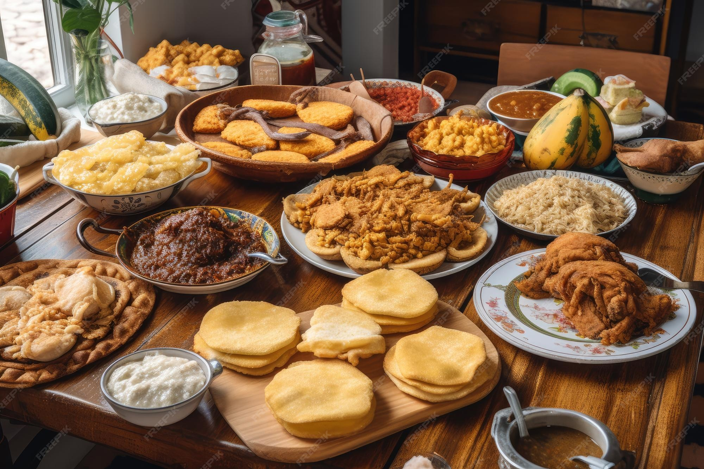

Jornadas de Cocina Tradicional 2024 - Barcelona
Sabores que cuentan historias
Tres dias de charlas, degustaciones y talleres practicos con cocineros que preservan las recetas de siempre.
Jornadas de Cocina Tradicional 2024 - Barcelona
Tres dias de charlas, degustaciones y talleres practicos con cocineros que preservan las recetas de siempre.